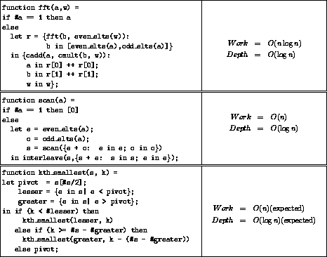
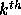
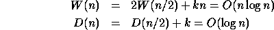
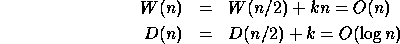

We conclude our examples with brief discussions of three other algorithms: the fast Fourier transform (FFT), the scan operation (all prefix sums), and an algorithm for finding the kth smallest element of a set. All the code is shown in Figure 11. These algorithms give more demonstration of the conciseness of nested data parallel constructs.

Figure 11: Code for the fast Fourier
transforms, the scan operation, and for finding the

smallest element of a set.
We use the standard recursive version for the fast Fourier transform (FFT) [11]. The second argument w is a sequence of the same length as a containing all the complex nth roots of unity. The FFT is called recursively on the odd and even elements of a. The results are then combined using cadd and cmult (complex addition and multiplication). Assuming that cadd and cmult take constant work and depth, then the recursion gives us the costs:

The plus-scan operation (also called all-prefix-sums) takes a sequence of values and returns a sequence of equal length for which each element is the sum of all previous elements in the original sequence. For example, executing a plus-scan on the sequence [3, 5, 3, 1, 6] returns [0, 3, 8, 11, 12]. This can be implemented as shown in Figure 11. The algorithm works by elementwise adding the odd and even elements and recursively solving the problem on these sums. The result of the recursive call is then used to generate all the prefix sums. The costs are:

The particular code shown only works on sequences that have a length equal to a power of two, but it is not hard to generalize it to work on sequences of any length.
A variation of Quicksort can be used to find the kth smallest element of a sequence [11]. This algorithm only calls itself recursively on the set of elements containing the result. Here we consider a parallel version of this algorithm. After selecting the lesser elements, if #lesser is greater than k, then the kth smallest element must belong to that set. In this case, the algorithm calls kth_smallest recursively on lesser using the same k. Otherwise, the algorithm selects the elements that are greater than the pivot, and can similarly find if the kth element belongs in greater. If it does belong in greater, the algorithm calls itself recursively, but must now readjust k by subtracting the number of elements less than or equal to the pivot. If the kth element belongs in neither lesser nor greater, then it must be the pivot, and the algorithm returns this value. For sequences of length n the expected work of this algorithm is O(n), which is the same as the time of the serial version. The expected depth is O(log n) since the expected depth of recursion is O(log n).